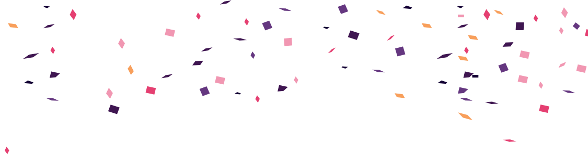

¬°Fer qued√≥ con un crush por Manu! üòç Era guapo y con un trabajo que le permit√≠a tener un buen carro. üöó Además, era papá de un beb√© super cosi üçºüíº


Después de chatear por unos días, Manu invitó a Fer a dar una vuelta. Él llevaba comida y se fueron de picnic a un mirador.
Fue así como Manu le pidió que fuera su novia.

Al inicio salían muy seguido, casi siempre a lugares con poca gente. Pero con el paso de las semanas se comenzaron a ver menos.
A Manu le gustaba ir a bares con sus amigos, tenía que trabajar, y cuando le quedaba tiempo libre, le tocaba cuidar a su bebé